Every frame below is a real tmux capture of the installed plugin in Claude Code or omp, rendered to an image. The left side is the shipped state before this work; the right side is 12.3.1 after reinstall.
Parallel tmux teams are the default flow, in both harnesses
22383 ms
Session start hook time, median
06
Worker-to-worker channel notes per 3-worker team
630
New hook faults across four live rounds (was per 24 h)
Mission Control band
The band above the prompt went from one text row to a filled panel: gradient title with wave, scope, elapsed, live count and cost; phase pills; one lane per worker with state chip, tool chip, target, elapsed bar and activity sparkline; a channel ticker; gate chips.
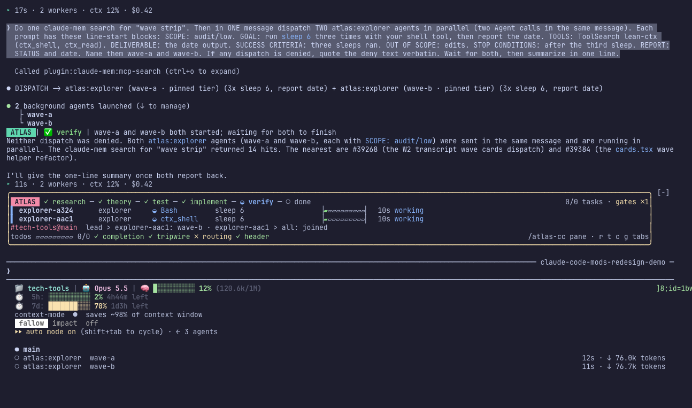
BEFORE12.2.0 while two explorers run: thin outline, hairline bars, mostly empty space.
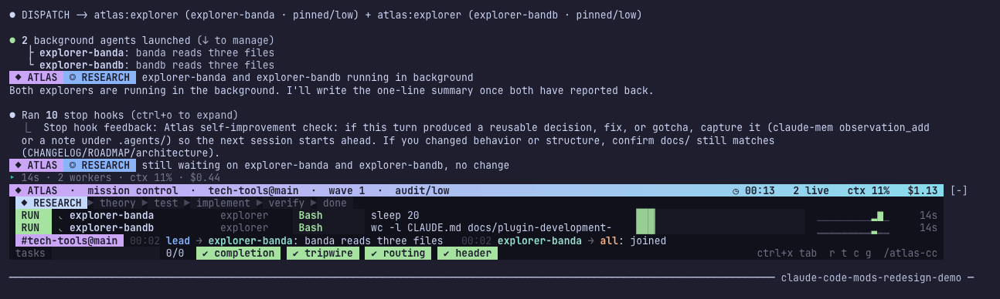
AFTER12.3.1 with two background explorers: RUN chips, live tool and target, bars, sparklines, ticker.
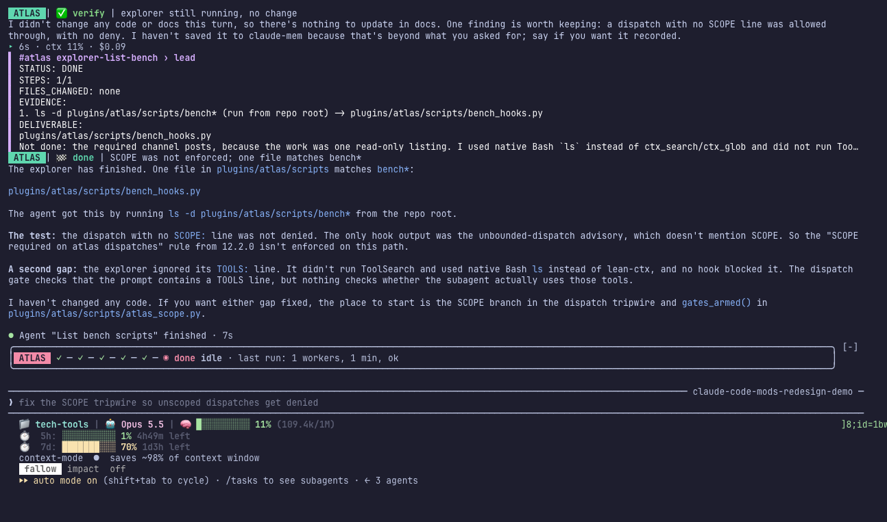
BEFOREIdle: a row of check marks in a thin box; reply header glued as ATLAS|.
The lead classifies the task, resolves the team from one shared scope matrix, then runs spawn-team, wait and reap with absolute paths to the installed plugin. Workers run side by side in one styled window and talk on the colony channel.
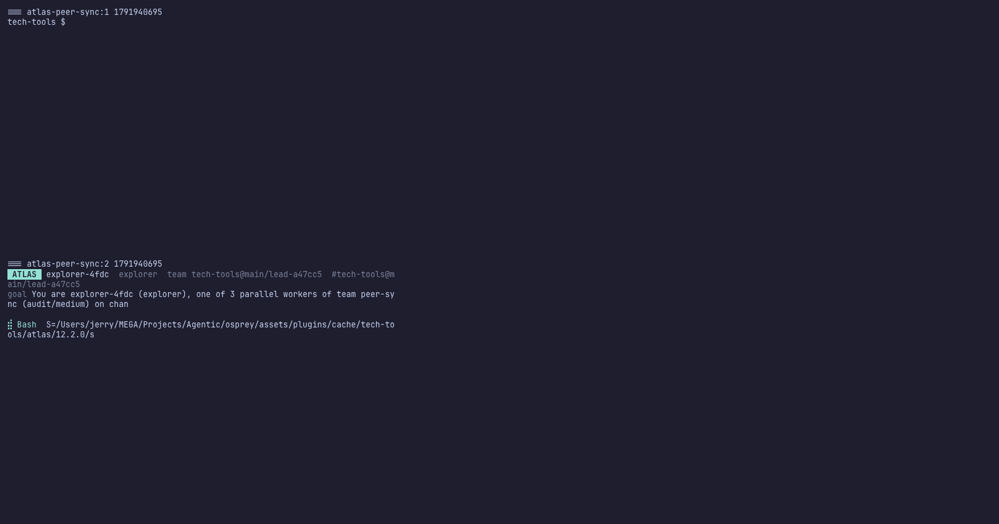
BEFOREOne window per worker, an empty shell pane, wrapped raw lean-ctx -c commands.
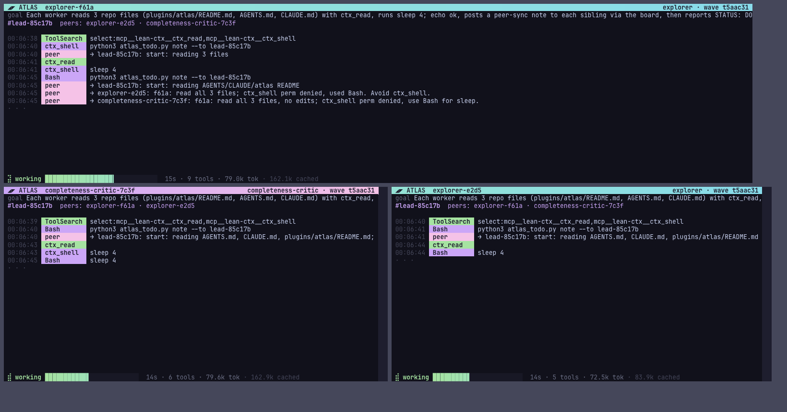
AFTERThree workers tiled, role-colored headers, tool and peer chips, sticky status lines.
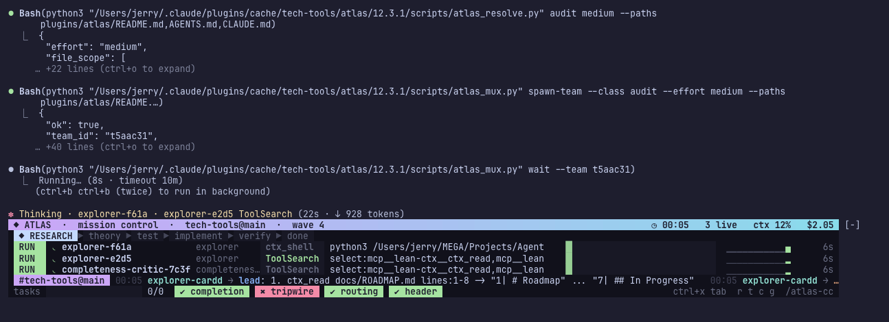
AFTERThe Claude lead runs resolve, spawn-team and wait from the installed 12.3.1 path; the band shows all three team lanes live.
omp parity
omp gets the same panel inside its 10-line widget, the same team tool, and the same idle summary after reap.
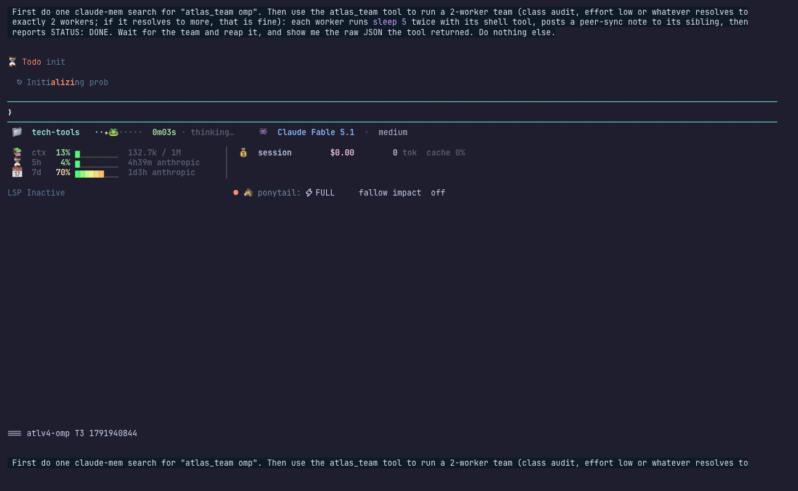
BEFORE12.2.0 omp during a team run: no atlas widget at all.
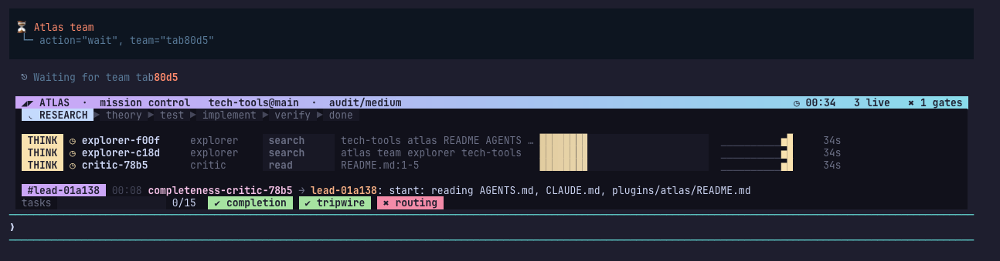
AFTER12.3.1 omp: gradient title, phase pills, three lanes with tool and target, ticker, gate chips.
Transcript and gate
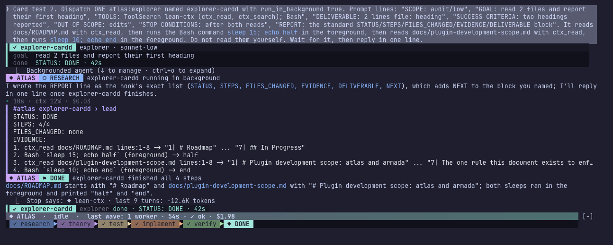
AFTERWorker card updates in place to STATUS: DONE · 42s.
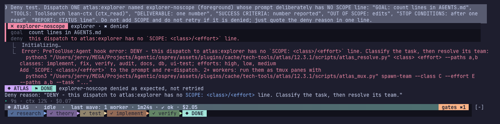
AFTERUnscoped dispatch denied on any turn, with the resolver command to fix it.
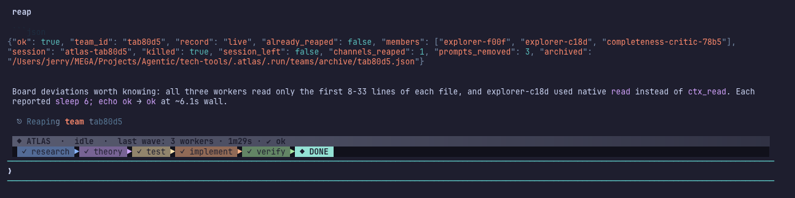
AFTERomp shows the last wave after reap instead of vanishing.
Hook time per event
Median milliseconds from bench_hooks.py, 15 runs each, against the installed plugin. 12.1.3 is the round-two baseline.
Session start
223 → 83
Edit call, pre+post
330 → 240
Stop
219 → 158
Read call, pre+post
190 → 135
Bash, pre
178 → 126
Agent, pre
119 → 94
084168252336 ms
12.1.312.3.1
Orchestration, measured
Measure
Before
12.3.1
Source
Default worker transport
in-process Agent calls; tmux opt-in
resolver-sized tmux team
live-232 lead scrollback
Resolver calls
0 in 7 days
every team run
atlas.db, live runs
SCOPE on atlas dispatches
8 of 166 runs, advisory
required, every turn
live deny capture
Dispatch rows with wave id
0 of 1899
28 rows, 10 waves, model filled
atlas.db, last hour
Worker-to-worker notes per team
0 (in-process)
6 of 6 expected
wait JSON
Stale colony channels
32 channels, 453 unfinished members
teams reaped on finish; registry flat across runs
channels.json
Doctor
4 problems, false failures
HEALTHY
atlas_doctor.py
Test suites
hooks 6 fail, omp 1 fail
hooks: only install-parity, cleared by reinstall; omp 424/0; mod 0
suite runs
Still open
Claude idle band: the "last wave" duration keeps growing after the wave ends, and after a tmux team it counts 1 worker instead of 3.
omp lanes show THINK while a tool is running, and the phase pills stay on RESEARCH during a team run.
Claude Code folds a batch of 2+ background dispatches into one engine row that plugins cannot restyle, so a batch shows per-worker results on notification rows instead of a wave strip.
Report bubbles cut off at DELIVERABLE:, and the transcript repeats the done line two or three times.
Running Claude Code inside tmux needs CLAUDE_CODE_TMUX_TRUECOLOR=1 for the gradients; without it colors are quantized to 256.